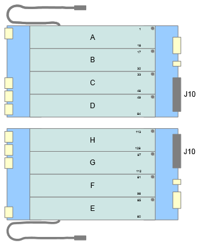
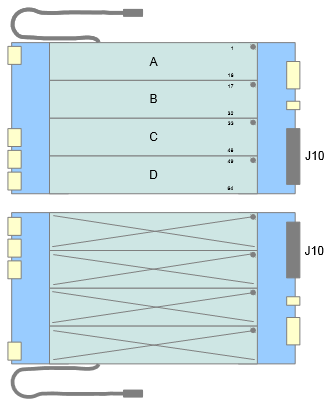
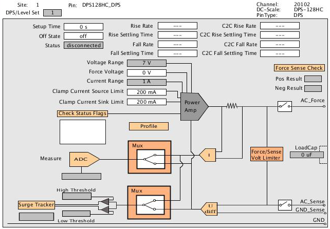
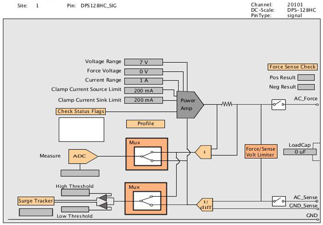
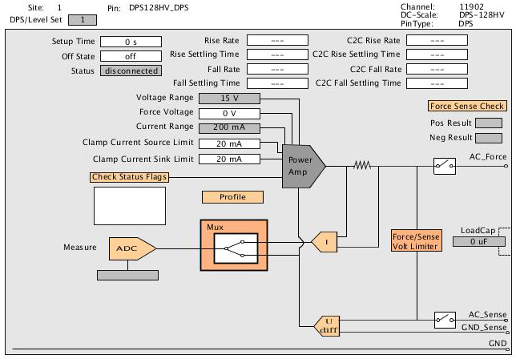
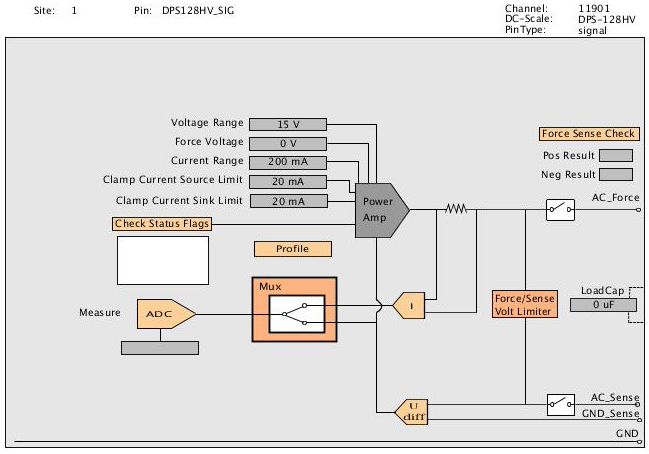

DPS128 / DPS64 hardware overview
DC Scale DPS128/DPS64 cards can reside in any I/O channel card slot. Each of the channels can source and sink current at a programmed voltage, and each channel can measure the voltages and currents supplied.
Variants
| DPS128‑HC | E8023CS | 128 HC channels | 1.0 A | -2.5 V ... +7.0 V |
| DPS64‑HC | E8023CSH | 64 HC channels | 1.0 A | -2.5 V ... +7.0 V |
For the maximum source/sink current per card see the DPS128 / DPS64 specifications.
Channel modules and logical boards:
The graphics below show the layout of the channel modules. The DPS128/DPS64 has one channel module per logical board.
DPS128-HC and DPS128-HV module order: |
DPS64-HC module order: |
|---|---|
 |
 |
DPS128-HC/HV module order: |
|
|
|
Hardware view
The figures below show example schematics as displayed in the Hardware view of SmarTest for DC Scale DPS128 channels. Note the differences in functionality, range and limit values for HC and HV channels.
DPS128-HC channel in DPS operating mode:

DPS128-HC channel in PMU operating mode:

DPS128-HV channel in DPS operating mode:

DPS128-HV channel in PMU operating mode:

The Hardware view is interactive.
The Profile field for example, allows you to measure and display current and voltage waveforms during pattern execution in the Hardware perspective. For details see Profiling of DC Scale cards with Hardware view. Other interactive fields are Surge Tracker and ADC.
The underlying sequences also generate sample test method code for the executed measurement in the Sample Code view. You can directly copy and paste the code from the view into your test method program. For details see Sample Code view.
Functional changes
- Introduced in SmarTest 7.2.1
- SmarTest 7.2.2: Support of DPS128-HC/HV and DPS128-HV
- SmarTest 7.3.2: Load Capacitance field in DPS128/DPS64 hardware views